USSR · Tier IX
All nations and tiers · EU v20410 → RU v14600ru · 3 November 2026
212A · Tier IX
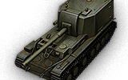
Penetration (mm)
EU  HE 52 /
HE 52 /  HE 65 /
HE 65 /  AP 258 → RU
AP 258 → RU  HE 51 /
HE 51 /  AP 258
AP 258
Damage (HP)
EU  HE 900 /
HE 900 /  HE 1200 /
HE 1200 /  AP 600 → RU
AP 600 → RU  HE 1200 /
HE 1200 /  AP 650
AP 650
Firepower
DPM (HP/min) EU 1 444.15  RU 1 925.54
RU 1 925.54
Explosion radius EU 10.40  RU 8
RU 8
Stun duration · maximum (s) EU 28 → RU —
Stun duration · minimum (s) EU 12.60 → RU —
Shell velocity (m/s) EU 425 RU 480
Max range (m) EU 1 263.11 RU 1 467.52
Potential damage EU 36 000 RU 48 000
Mobility
Tank traverse on hard terrain (°/s) EU 21.81 RU 21.80
Armor & health
Health · ammo rack EU 230 RU 120
Miscellaneous
Moving camo EU 1.77 RU 1.71
Shell cost EU 1 910 RU 2 270
IS-3-II · Tier IX
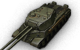
Gun handling
Dispersion · firing EU 4 RU 3
Mobility
Turret traverse (°/s) EU 27.12 RU 22.95
Tank traverse (°/s) EU 37.55 RU 31.29
Tank traverse on hard terrain (°/s) EU 35.77 RU 30.65
Tank traverse on medium terrain (°/s) EU 32.52 RU 27.87
Tank traverse on soft terrain (°/s) EU 18.83 RU 16.13
Armor & health
Health EU 1 900 RU 2 000
Alternate mode
EU stats · RU statsGun handling
Dispersion · firing EU 4 RU 3
Mobility
Turret traverse (°/s) EU 27.12 RU 22.95
Tank traverse (°/s) EU 37.55 RU 31.29
Tank traverse on hard terrain (°/s) EU 35.77 RU 30.65
Tank traverse on medium terrain (°/s) EU 32.52 RU 27.87
Tank traverse on soft terrain (°/s) EU 18.83 RU 16.13
Armor & health
Health EU 1 900 RU 2 000
K-91-PT · Tier IX
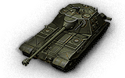
Damage (HP)
EU  AP 390 /
AP 390 /  APCR 390 /
APCR 390 /  HE 530 → RU
HE 530 → RU  AP 420 /
AP 420 /  APCR 420 /
APCR 420 /  HE 530
HE 530
Firepower
DPM (HP/min) EU 2 837.93 RU 3 056.23
Ammo capacity EU 30 RU 40
Potential damage EU 11 700 RU 16 800
Gun handling
Aim time (s) EU 2.49 RU 2.21
Object 257 · Tier IX
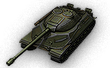
Mobility
Tank traverse on hard terrain (°/s) EU 44.10 RU 47.27
Tank traverse on medium terrain (°/s) EU 33.72 RU 36.15
Tank traverse on soft terrain (°/s) EU 22.93 RU 24.58
Armor & health
Health EU 2 000 RU 1 900
Miscellaneous
Moving camo EU 3.33 RU 3.27
Moving camo · after firing EU 0.60 RU 0.59
Object 263 · Tier IX
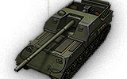
Mobility
Tank traverse on hard terrain (°/s) EU 27.44 RU 32.32
Tank traverse on medium terrain (°/s) EU 23.52 RU 27.70
Tank traverse on soft terrain (°/s) EU 14.32 RU 16.86
Object 265T · EU IX → RU VIII
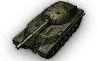
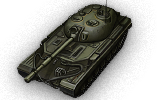
Penetration (mm)
EU  AP 242 /
AP 242 /  HEAT 300 /
HEAT 300 /  HE 61 → RU
HE 61 → RU  AP 225 /
AP 225 /  HEAT 270 /
HEAT 270 /  HE 61
HE 61
General
Tier EU 9 → RU 8
Firepower
DPM (HP/min) EU 2 218.75 RU 1 937
Rate of fire (rounds/min) EU 5.69 RU 4.97
Reload time (s) EU 10.55 RU 12.08
Clip size EU 3 → RU —
Clip damage · damage EU 1 170 → RU —
Clip damage · time (s) EU 6 → RU —
Intra-clip reload EU 3 → RU —
Ammo capacity EU 50 RU 40
Potential damage EU 19 500 RU 15 600
Gun handling
Aim time (s) EU 2.59 RU 2.78
Dispersion · moving EU 0.24 RU 0.20
Dispersion · tank traverse EU 0.24 RU 0.20
Dispersion · turret traverse EU 0.15 RU 0.06
Dispersion · firing EU 4 RU 3
Depression (°) EU 6 RU 8
Mobility
Forward speed (km/h) EU 40 RU 35
Forward speed on hard terrain (km/h) EU 40 RU 35
Forward speed on medium terrain (km/h) EU 35.90 RU 29.42
Forward speed on soft terrain (km/h) EU 21.54 RU 20
Reverse speed (km/h) EU 14 RU 15
Engine power (hp) EU 750 RU 700
Weight (kg) EU 53 000 → RU 53 275
Power/weight (hp/t) EU 14.15 RU 13.14
Terrain resist (hard) EU 1.25 RU 1.05
Terrain resist (med) EU 1.44 RU 1.63
Turret traverse (°/s) EU 26.08 RU 33.38
Tank traverse (°/s) EU 31.29 RU 27.12
Tank traverse on hard terrain (°/s) EU 31.29 RU 27.12
Tank traverse on medium terrain (°/s) EU 27.12 RU 17.55
Tank traverse on soft terrain (°/s) EU 16.27 RU 11.93
Armor & health
Hull armor · front (mm) EU 130 RU 170
Hull armor · side (mm) EU 75 RU 110
Hull armor · rear (mm) EU 40 RU 60
Turret armor · front (mm) EU 300 RU 270
Turret armor · side (mm) EU 120 RU 160
Turret armor · rear (mm) EU 40 RU 100
Health EU 1 800 RU 1 500
Health · engine EU 310 RU 260
Health · track EU 240 RU 220
Health · ammo rack EU 230 RU 200
Track repair time (s) EU 11.70 RU 12.03
Miscellaneous
Stationary camo · after firing EU 1.20 RU 0.67
Moving camo · after firing EU 0.61 RU 0.34
View range (m) EU 380 RU 350
Radio range (m) EU 730 RU 625
Fire chance (%) EU 15 RU 12
Shell cost EU 870 RU 1 180
Object 283 · Tier IX
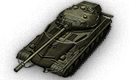
Penetration (mm)
EU  AP 226 /
AP 226 /  HEAT 300 /
HEAT 300 /  HE 50 → RU
HE 50 → RU  AP 236 /
AP 236 /  HEAT 310 /
HEAT 310 /  HE 50
HE 50
Firepower
DPM (HP/min) EU 2 399.23 RU 2 531.33
Rate of fire (rounds/min) EU 6.66 RU 7.03
Reload time (s) EU 9 RU 8.53
Gun handling
Aim time (s) EU 2.40 RU 2.01
Dispersion · turret traverse EU 0.18 RU 0.10
Depression (°) EU 6 RU 8
Armor & health
Health EU 1 600 RU 1 700
Object 430 · Tier IX
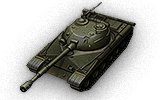
Gun handling
Aim time (s) EU 2.21 RU 2.40
Dispersion · moving EU 0.15 RU 0.16
Dispersion · tank traverse EU 0.15 RU 0.16
Dispersion · turret traverse EU 0.10 RU 0.12
Mobility
Forward speed on soft terrain (km/h) EU 40.67 RU 35.25
Engine power (hp) EU 600 RU 520
Power/weight (hp/t) EU 17.10 RU 14.82
Tank traverse (°/s) EU 62.58 RU 54.24
Tank traverse on hard terrain (°/s) EU 62.58 RU 55.85
Tank traverse on medium terrain (°/s) EU 53.64 RU 47.87
Tank traverse on soft terrain (°/s) EU 23.47 RU 20.94
Armor & health
Hull armor · front (mm) EU 140 RU 120
Miscellaneous
View range (m) EU 390 RU 380
Object 430 Version II · Tier IX
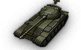
Penetration (mm)
EU  AP 246 /
AP 246 /  HEAT 330 /
HEAT 330 /  HE 50 → RU
HE 50 → RU  AP 256 /
AP 256 /  HEAT 330 /
HEAT 330 /  HE 50
HE 50
Firepower
DPM (HP/min) EU 2 902.26 RU 2 706.16
Rate of fire (rounds/min) EU 9.07 RU 8.46
Reload time (s) EU 6.62 RU 7.09
Gun handling
Dispersion (m/100 m) EU 0.33 RU 0.31
Dispersion · damaged EU 0.65 RU 0.61
Dispersion · firing EU 3 RU 3.50
Depression (°) EU 4 RU 8
Mobility
Tank traverse (°/s) EU 54.24 RU 50.06
Tank traverse on hard terrain (°/s) EU 55.49 RU 51.32
Tank traverse on medium terrain (°/s) EU 48.55 RU 44.91
Tank traverse on soft terrain (°/s) EU 24.28 RU 22.45
Armor & health
Health EU 1 800 RU 1 750
Object 590 · Tier IX
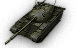
Penetration (mm) 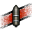
EU  APCR 238 /
APCR 238 /  HE 50 → RU
HE 50 → RU  AP 225 /
AP 225 /  APCR 268 /
APCR 268 /  HE 50
HE 50
Damage (HP)
EU  APCR 320 / AP 320 /
APCR 320 / AP 320 /  HE 420 → RU
HE 420 → RU  AP 320 /
AP 320 /  APCR 320 /
APCR 320 /  HE 420
HE 420
Firepower
DPM (HP/min) EU 2 355.95 RU 2 451.60
Rate of fire (rounds/min) EU 7.36 RU 7.66
Reload time (s) EU 8.15 RU 7.83
Clip damage · time (s) EU 6 RU 5
Intra-clip reload EU 3 RU 2.50
Shell velocity (m/s) EU 1 480 RU 1 015
Normalization EU 2 RU 5
Gun handling
Aim time (s) EU 2.59 RU 2.68
Dispersion (m/100 m) EU 0.36 RU 0.35
Dispersion · damaged EU 0.73 RU 0.71
Dispersion · firing EU 3.50 RU 4
Depression (°) EU 6 RU 5
Armor & health
Hull armor · front (mm) EU 110 RU 100
Turret armor · front (mm) EU 245 RU 200
Object 704 · Tier IX
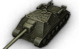
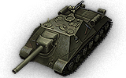
Gun handling
Aim time (s) EU 2.59 RU 2.78
Dispersion (m/100 m) EU 0.35 RU 0.37
Dispersion · damaged EU 0.69 RU 0.75
Mobility
Forward speed (km/h) EU 40 RU 37
Forward speed on hard terrain (km/h) EU 40 RU 37
Forward speed on medium terrain (km/h) EU 40 RU 37
Forward speed on soft terrain (km/h) EU 27.20 RU 25.16
Reverse speed (km/h) EU 14 RU 13
Engine power (hp) EU 800 RU 740.10
Power/weight (hp/t) EU 16.44 RU 15.20
Tank traverse (°/s) EU 29.20 RU 22.95
Tank traverse on hard terrain (°/s) EU 29.32 RU 21.58
Tank traverse on medium terrain (°/s) EU 23.04 RU 16.96
Tank traverse on soft terrain (°/s) EU 14.02 RU 10.32
Armor & health
Health · engine EU 310 RU 370
Health · track EU 240 RU 230
Track repair time (s) EU 11.70 RU 12.03
Object 705 · Tier IX
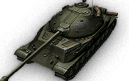
Armor & health
Health EU 2 100 RU 2 000
Miscellaneous
Moving camo EU 3.18 RU 3.12
Moving camo · after firing EU 0.49 RU 0.48
Object 752 · Tier IX
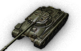
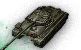
Penetration (mm)
EU  AP 240 /
AP 240 /  APCR 310 /
APCR 310 /  HE 68 → RU
HE 68 → RU  AP 246 /
AP 246 /  HEAT 310 /
HEAT 310 /  HE 68
HE 68
Damage (HP)
EU  AP 390 /
AP 390 /  APCR 390 /
APCR 390 /  HE 530 → RU
HE 530 → RU  AP 440 /
AP 440 /  HEAT 440 /
HEAT 440 /  HE 530
HE 530
Firepower
DPM (HP/min) EU 1 800.08 RU 1 873.14
Rate of fire (rounds/min) EU 4.62 RU 4.26
Reload time (s) EU 32.60 RU 14.09
Clip size EU 3 → RU —
Clip damage · damage EU 1 170 → RU —
Clip damage · time (s) EU 6.40 → RU —
Intra-clip reload EU 3.20 → RU —
Shell velocity (m/s) EU 862 RU 980
Ammo capacity EU 30 RU 42
Potential damage EU 11 700 RU 18 480
Gun handling
Aim time (s) EU 3.26 RU 2.88
Dispersion (m/100 m) EU 0.40 RU 0.38
Dispersion · damaged EU 0.81 RU 0.77
Dispersion · moving EU 0.24 RU 0.22
Dispersion · tank traverse EU 0.24 RU 0.22
Dispersion · turret traverse EU 0.11 RU 0.10
Mobility
Forward speed (km/h) EU 35 RU 32
Forward speed on hard terrain (km/h) EU 35 RU 32
Forward speed on medium terrain (km/h) EU 35 RU 32
Forward speed on soft terrain (km/h) EU 25.59 RU 30
Reverse speed (km/h) EU 12 RU 14
Engine power (hp) EU 580 RU 680
Power/weight (hp/t) EU 12.78 RU 14.98
Armor & health
Hull armor · front (mm) EU 195 RU 205
ST-I · Tier IX
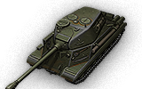
Gun handling
Aim time (s) EU 2.88 RU 3.26
Dispersion (m/100 m) EU 0.40 RU 0.38
Dispersion · damaged EU 0.81 RU 0.77
Dispersion · moving EU 0.20 RU 0.22
Dispersion · tank traverse EU 0.20 RU 0.22
Dispersion · turret traverse EU 0.12 RU 0.20
Mobility
Forward speed on hard terrain (km/h) EU 40 RU 38.48
Forward speed on medium terrain (km/h) EU 30.81 RU 28.86
Forward speed on soft terrain (km/h) EU 16.43 RU 15.39
Engine power (hp) EU 790 RU 740.10
Power/weight (hp/t) EU 12.95 RU 12.13
Turret traverse (°/s) EU 25.03 RU 18.77
Tank traverse (°/s) EU 31.29 RU 27.12
Tank traverse on hard terrain (°/s) EU 32.60 RU 27.64
Tank traverse on medium terrain (°/s) EU 24.45 RU 20.73
Tank traverse on soft terrain (°/s) EU 13.04 RU 11.06
Armor & health
Health EU 2 000 RU 1 900
SU-122V · EU IX → RU X
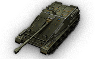
Penetration (mm)
EU  AP 270 /
AP 270 /  APCR 315 /
APCR 315 /  HE 68 → RU
HE 68 → RU  AP 286 /
AP 286 /  HEAT 340 /
HEAT 340 /  HE 68
HE 68
Damage (HP)
EU  AP 440 /
AP 440 /  APCR 440 /
APCR 440 /  HE 530 → RU
HE 530 → RU  AP 440 /
AP 440 /  HEAT 440 /
HEAT 440 /  HE 530
HE 530
General
Tier EU 9 → RU 10
Firepower
DPM (HP/min) EU 3 025.85 RU 2 107.64
Rate of fire (rounds/min) EU 6.88 RU 4.79
Reload time (s) EU 8.72 RU 44.10
Shell velocity (m/s) EU 940 RU 1 040
Ammo capacity EU 40 RU 52
Potential damage EU 17 600 RU 22 880
Clip size EU — → RU 4
Clip damage · damage EU — → RU 1 760
Clip damage · time (s) EU — → RU 6
Intra-clip reload EU — → RU 2
Gun handling
Aim time (s) EU 1.92 RU 2.40
Dispersion (m/100 m) EU 0.38 RU 0.35
Dispersion · damaged EU 0.77 RU 0.69
Dispersion · tank traverse EU 0.20 RU 0.16
Dispersion · firing EU 4 RU 3.50
Mobility
Forward speed (km/h) EU 50 RU 44
Forward speed on hard terrain (km/h) EU 50 RU 44
Forward speed on medium terrain (km/h) EU 50 RU 44
Forward speed on soft terrain (km/h) EU 36.29 RU 35.44
Engine power (hp) EU 820 RU 850
Weight (kg) EU 43 000 → RU 32 602
Power/weight (hp/t) EU 19.07 RU 26.07
Terrain resist (hard) EU 0.96 RU 1.44
Terrain resist (med) EU 1.15 RU 1.63
Terrain resist (soft) EU 1.92 RU 2.68
Turret traverse (°/s) EU 16.69 RU 27.12
Tank traverse (°/s) EU 46.93 RU 29.20
Tank traverse on hard terrain (°/s) EU 44.59 RU 27.74
Tank traverse on medium terrain (°/s) EU 37.16 RU 24.48
Tank traverse on soft terrain (°/s) EU 22.29 RU 14.86
Armor & health
Hull armor · front (mm) EU 100 RU 80
Hull armor · side (mm) EU 40 RU 60
Hull armor · rear (mm) EU 30 RU 60
Health EU 1 600 RU 1 850
Health · engine EU 310 RU 400
Health · track EU 240 RU 220
Health · ammo rack EU 230 RU 260
Health · fuel tank EU 200 RU 175
Track repair time (s) EU 11.70 RU 11.40
Miscellaneous
View range (m) EU 350 RU 360
Radio range (m) EU 670 RU 850
Fire chance (%) EU 15 RU 10
Shell cost EU 1 095 RU 1 080
Alternate mode
EU stats · RU statsGeneral
Tier EU 9 → RU 10
Firepower
DPM (HP/min) EU 3 025.85 RU 2 107.64
Rate of fire (rounds/min) EU 6.88 RU 4.79
Reload time (s) EU 8.72 RU 44.10
Shell velocity (m/s) EU 940 RU 1 040
Ammo capacity EU 40 RU 52
Potential damage EU 17 600 RU 22 880
Clip size EU — → RU 4
Clip damage · damage EU — → RU 1 760
Clip damage · time (s) EU — → RU 6
Intra-clip reload EU — → RU 2
Gun handling
Aim time (s) EU 1.92 RU 1.25
Dispersion (m/100 m) EU 0.38 RU 0.25
Dispersion · damaged EU 0.77 RU 0.50
Dispersion · moving EU 0.10 RU 0.18
Dispersion · tank traverse EU 0.10 RU 0.16
Dispersion · turret traverse EU 0.10 RU 0.06
Dispersion · firing EU 4 RU 16
Mobility
Forward speed (km/h) EU 20 RU 12
Forward speed on hard terrain (km/h) EU 20 RU 12
Forward speed on medium terrain (km/h) EU 20 RU 12
Forward speed on soft terrain (km/h) EU 20 RU 12
Reverse speed (km/h) EU 20 RU 12
Engine power (hp) EU 820 RU 850
Weight (kg) EU 43 000 → RU 32 602
Power/weight (hp/t) EU 19.07 RU 26.07
Terrain resist (hard) EU 0.96 RU 1.44
Terrain resist (med) EU 1.15 RU 1.63
Terrain resist (soft) EU 1.92 RU 2.68
Turret traverse (°/s) EU 16.69 RU 27.12
Tank traverse (°/s) EU 46.93 RU 29.20
Tank traverse on hard terrain (°/s) EU 44.59 RU 27.74
Tank traverse on medium terrain (°/s) EU 37.16 RU 24.48
Tank traverse on soft terrain (°/s) EU 22.29 RU 14.86
Armor & health
Hull armor · front (mm) EU 100 RU 80
Hull armor · side (mm) EU 40 RU 60
Hull armor · rear (mm) EU 30 RU 60
Health EU 1 600 RU 1 850
Health · engine EU 310 RU 400
Health · track EU 240 RU 220
Health · ammo rack EU 230 RU 260
Health · fuel tank EU 200 RU 175
Track repair time (s) EU 11.70 RU 11.40
Miscellaneous
View range (m) EU 350 RU 360
Radio range (m) EU 670 RU 850
Fire chance (%) EU 15 RU 10
Shell cost EU 1 095 RU 1 080
T-10 · Tier IX
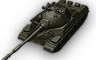
Firepower
DPM (HP/min) EU 2 294.60 RU 2 238.63
Rate of fire (rounds/min) EU 5.21 RU 5.09
Reload time (s) EU 11.51 RU 11.79
Shell velocity (m/s) EU 1 010 RU 940
Ammo capacity EU 35 RU 30
Potential damage EU 15 400 RU 13 200
Gun handling
Aim time (s) EU 2.59 RU 2.68
Dispersion · firing EU 4 RU 3.50
Mobility
Forward speed on soft terrain (km/h) EU 33.88 RU 31.24
Engine power (hp) EU 860 RU 792.96
Power/weight (hp/t) EU 16.91 RU 15.59
Tank traverse (°/s) EU 37.55 RU 33.38
Tank traverse on hard terrain (°/s) EU 39.72 RU 35.21
Tank traverse on medium terrain (°/s) EU 36.11 RU 32.01
Tank traverse on soft terrain (°/s) EU 20.91 RU 18.53
Armor & health
Hull armor · front (mm) EU 120 RU 130
Health EU 1 900 RU 1 800
T-54 · Tier IX

Penetration (mm)
EU  AP 236 /
AP 236 /  HEAT 330 /
HEAT 330 /  HE 50 → RU
HE 50 → RU  AP 241 /
AP 241 /  HEAT 330 /
HEAT 330 /  HE 50
HE 50
Firepower
DPM (HP/min) EU 2 902.26 RU 2 706.16
Rate of fire (rounds/min) EU 9.07 RU 8.46
Reload time (s) EU 6.62 RU 7.09
Shell velocity (m/s) EU 1 120 RU 895
Gun handling
Dispersion · moving EU 0.11 RU 0.14
Dispersion · tank traverse EU 0.11 RU 0.14
Depression (°) EU 6 RU 7
Mobility
Forward speed on soft terrain (km/h) EU 37.09 RU 56
Engine power (hp) EU 750 RU 740.10
Power/weight (hp/t) EU 21.44 RU 21.16
Terrain resist (hard) EU 0.96 RU 0.24
Terrain resist (med) EU 1.05 RU 0.58
Terrain resist (soft) EU 2.11 RU 1.04
Tank traverse (°/s) EU 58.41 RU 54.24
Tank traverse on hard terrain (°/s) EU 62.58 RU 59.52
Tank traverse on medium terrain (°/s) EU 56.89 RU 25.13
Tank traverse on soft terrain (°/s) EU 28.44 RU 14.01
Armor & health
Health EU 1 800 RU 1 750
T-54 FL · Tier IX
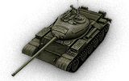
Penetration (mm)
EU  AP 236 /
AP 236 /  HEAT 330 /
HEAT 330 /  HE 50 → RU
HE 50 → RU  AP 241 /
AP 241 /  HEAT 330 /
HEAT 330 /  HE 50
HE 50
Firepower
DPM (HP/min) EU 2 902.26 RU 2 706.16
Rate of fire (rounds/min) EU 9.07 RU 8.46
Reload time (s) EU 6.62 RU 7.09
Shell velocity (m/s) EU 1 120 RU 895
Gun handling
Dispersion · moving EU 0.11 RU 0.14
Dispersion · tank traverse EU 0.11 RU 0.14
Depression (°) EU 6 RU 7
Mobility
Forward speed on soft terrain (km/h) EU 37.09 RU 56
Engine power (hp) EU 750 RU 740.10
Power/weight (hp/t) EU 21.44 RU 21.16
Terrain resist (hard) EU 0.96 RU 0.24
Terrain resist (med) EU 1.05 RU 0.58
Terrain resist (soft) EU 2.11 RU 1.04
Tank traverse (°/s) EU 58.41 RU 54.24
Tank traverse on hard terrain (°/s) EU 58.41 RU 54.24
Tank traverse on medium terrain (°/s) EU 53.10 RU 22.90
Tank traverse on soft terrain (°/s) EU 26.55 RU 12.77
Armor & health
Health EU 1 800 RU 1 750
T-54 ltwt. · Tier IX
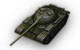
Gun handling
Dispersion (m/100 m) EU 0.39 RU 0.40
Dispersion · damaged EU 0.79 RU 0.81
Dispersion · firing EU 3 RU 4
Mobility
Forward speed (km/h) EU 75 RU 69
Forward speed on hard terrain (km/h) EU 75 RU 69
Forward speed on medium terrain (km/h) EU 75 RU 69
Forward speed on soft terrain (km/h) EU 75 RU 69
Reverse speed (km/h) EU 27 RU 23
Engine power (hp) EU 1 300 RU 1 000
Power/weight (hp/t) EU 42.43 RU 32.64
Tank traverse (°/s) EU 50.06 RU 52.15
Tank traverse on hard terrain (°/s) EU 54.51 RU 65.62
Tank traverse on medium terrain (°/s) EU 47.69 RU 57.42
Tank traverse on soft terrain (°/s) EU 31.79 RU 38.28
Armor & health
Health EU 1 500 RU 1 300
Miscellaneous
Stationary camo EU 17.21 RU 16.30
Stationary camo · after firing EU 3.79 RU 3.59
Moving camo EU 17.21 RU 16.30
Moving camo · after firing EU 3.79 RU 3.59
View range (m) EU 400 RU 390